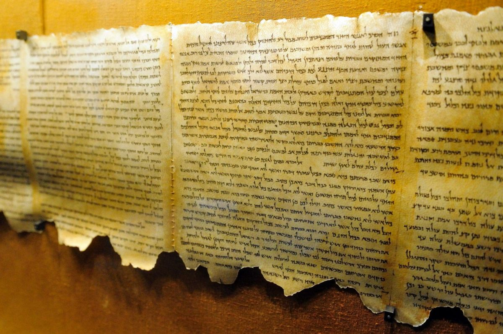

The Sources Behind Every Episode
Oldest KJV, the Hebrew Bible cross-translated, and the Dead Sea Scrolls as a check. Here is why those three, in that order.
Every episode of The Right Way lists its sources in its description. That is not decoration — it is the covenant of this channel. Here are the three layers, and why they stand in this order.

First, the oldest proven King James Version. Modern translations quietly leave things out — verses softened, phrases dropped. The KJV is our text of record because it does not omit what the modern versions take out, and because it is the oldest proven English text we can put in front of everyone, free.

Second, the Hebrew Bible. The Scriptures were written in Hebrew soil. We combine the Hebrew text with the KJV and cross-translate between them, so depictions carry the full story with all its details — including the Hebrew words that no single English word can hold.

Third, the Dead Sea Scrolls. Where proven scroll texts exist, they cross-check the chapter — the oldest witnesses we have, consulted before a single frame is drawn. Add per-chapter artifact research, and every episode stands on evidence you can go and check yourself.